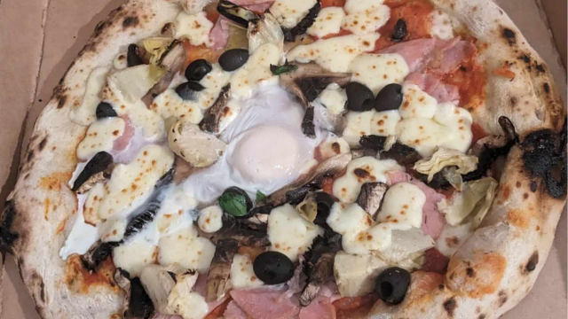
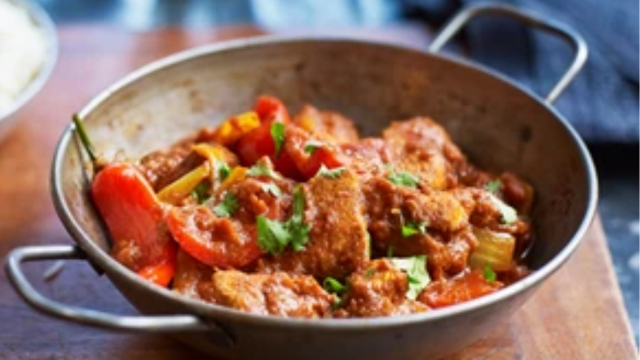
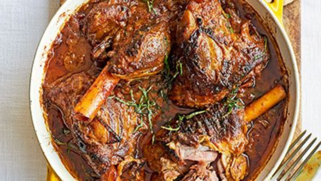

Recipes
Italian

Diavola Pizza
This devilish delight, is named for its hot and spicy flavour profile. In this case a pizza with plenty of hot salami pepperoni and chillies preserved in spicy chilli oil. Sure to make your taste buds tingle.
Ingredients
- 300g strong white bread flour, plus extra for dusting
- 1 tsp instant yeast
- 2 tbsp olive oil
- 2 garlic cloves, crushed
- 200ml passata
- 8 mozzarella pearls, halved
- Pepperoni
- Spicy Salami
- Chillies preserved in oil
- Chilli flakes
Instructions
- Tip the flour into a bowl, then stir in the yeast and 1 tsp salt. Make a well in the centre and pour in 200ml warm water (make sure it’s not too hot) along with the oil. Stir together with a wooden spoon until you have a soft, fairly wet dough.
- Tip the dough out onto a lightly floured surface and knead for 5 mins until smooth. Cover with a tea towel and set aside for an hour or so or until the dough has puffed up and doubled in size. You can also leave the rough, unkneaded dough in the bowl, cover with a tea towel and leave in the fridge overnight and the dough will continue to prove on its own.
- Meanwhile, make the tomato sauce. Put the oil in a small pan and fry the garlic briefly (don’t let it brown), then add the passata and simmer everything until the sauce thickens a little. Leave to cool.
- Once the dough has risen, knead it quickly in the bowl to knock it back, then tip out onto a lightly floured surface and cut into two balls. Roll out each ball into a large teardrop that is very thin and about 25cm across (teardrop shapes fit baking sheets more easily than rounds).
- Heat oven to 240C/220C fan/ gas 9 with a large baking sheet inside. Lift one of the bases onto another floured baking sheet. Smooth the sauce over the base with the back of a spoon, top with pepperoni, spicy salami and chillies to taste, scatter over half the mozzarella, drizzle with chilli oil and season with chilli flakes.
- Put the pizza, still on its baking sheet, on top of the hot sheet in the oven and bake for 8-10 mins until crisp.

Go somewhere
Capricciosa Pizza
Pizza capricciosa is a style of pizza prepared with mozzarella, Italian baked ham, mushroom, olives, artichoke and egg. Creating a subtle balance of complimentary flavors.
Ingredients
- 300g strong white bread flour, plus extra for dusting
- 1 tsp instant yeast
- 2 tbsp olive oil
- 2 garlic cloves, crushed
- 200ml passata
- 8 mozzarella pearls, halved
- Ham
- Jar of Artichokes
- Black olives
- Mushrooms
- 1 Egg
Instructions
- Tip the flour into a bowl, then stir in the yeast and 1 tsp salt. Make a well in the centre and pour in 200ml warm water (make sure it’s not too hot) along with the oil. Stir together with a wooden spoon until you have a soft, fairly wet dough.
- Tip the dough out onto a lightly floured surface and knead for 5 mins until smooth. Cover with a tea towel and set aside for an hour or so or until the dough has puffed up and doubled in size. You can also leave the rough, unkneaded dough in the bowl, cover with a tea towel and leave in the fridge overnight and the dough will continue to prove on its own.
- Meanwhile, make the tomato sauce. Put the oil in a small pan and fry the garlic briefly (don’t let it brown), then add the passata and simmer everything until the sauce thickens a little. Leave to cool.
- Once the dough has risen, knead it quickly in the bowl to knock it back, then tip out onto a lightly floured surface and cut into two balls. Roll out each ball into a large teardrop that is very thin and about 25cm across (teardrop shapes fit baking sheets more easily than rounds).
- Heat oven to 240C/220C fan/ gas 9 with a large baking sheet inside. Lift one of the bases onto another floured baking sheet. Smooth the sauce over the base with the back of a spoon, top with ham, artichokes, black olives and mushrooms to taste, scatter over half the mozzarella, drizzle with olive oil and season. Then crack an egg on the center.
- Put the pizza, still on its baking sheet, on top of the hot sheet in the oven and bake for 8-10 mins until crisp.
Indian

Go somewhere
Chicken jalfrezi
Instead of calling the Indian takeaway, make your own easy chicken jalfrezi. Our healthy curry recipe also has two of your 5-a-day and a good dose of vitamin C.
Ingredients
- ½ large onion, roughly chopped
- 2 garlic cloves, chopped
- 1 green chilli, finely chopped
- vegetable oil, for frying
- 400g can plum tomatoes
- 1 tbsp ground coriander
- 1 tbsp ground cumin
- 1 tsp turmeric
- 2-3 chicken breasts, diced
- 1 tsp ground cumin
- 1 tsp ground coriander
- 1 tsp turmeric
- ½ large onion, sliced
- 1 red pepper, chopped
- 2 red chillies, finely chopped (optional)
- 2 tsp garam masala
- chopped coriander leaves
Instructions
- Take 2-3 diced chicken breasts and coat in 1 tsp cumin, 1 tsp coriander and 1 tsp turmeric then leave it to marinate in the fridge while you make the sauce.
- To make the sauce, fry ½ roughly chopped large onion, 2 chopped garlic cloves and 1 finely chopped green chilli in a large pan with a little vegetable oil, for around 5 mins, until browned.
- Add 300ml water to the onion mixture and simmer for around 20 minutes.
- Meanwhile, put a 400g can plum tomatoes in a food processor and give it a good whizz (aim for a smooth consistency).
- Heat another large pan and gently fry 1 tbsp coriander, 1 tbsp cumin and 1 tsp turmeric in a splash of oil for about a minute. Add the tomatoes to this pan and simmer for around 10 minutes.
- Next, whizz your onion mixture in the food processor and add it to the spiced tomato sauce. Season generously, stir, then simmer for 20 minutes. You can make large batches of this sauce and freeze it for later use.
- Fry the marinated chicken in vegetable oil and stir continuously. After a few minutes, turn down the heat and add the remaining ½ sliced onion, 1 chopped red pepper and 2 finely chopped red chillies. Stir until the onions and pepper soften.
- Add the sauce you prepared earlier to the cooked chicken and simmer for around 10-20 minutes, adding a splash of water if it gets too thick.
- Just before you dish it up, stir in 2 tsp garam masala and handful of chopped coriander leaves. Serve with basmati rice or naan bread.

Go somewhere
Lamb Shank Madras
While it takes time, this hearty one-pot lamb curry is easy and you can make it two days in advance for even better flavour. Serve with naan bread and rice.
Ingredients
- 4 tbsp natural yogurt
- 1 tbsp ground cumin
- 1 tsp turmeric
- 4 lamb shanks
- 2 tbsp sunflower oil
- 4 onions, sliced
- 4 tbsp madras curry powder
- 8 garlic cloves, grated or crushed
- piece ginger, grated
- 220g tin chopped tomatoes
- 3 whole dried red chillies
- 5 curry leaves
- 4 cardamom pods, split
- 3 tbsp lime pickle
- 300ml chicken stock
- chopped mint leaves, naan bread and rice, to serve
Instructions
- Tip the yogurt, cumin, turmeric, 1 tsp sea salt and the lamb shanks into a large mixing bowl, then mix to coat the lamb. Cover and pop in the fridge for a couple of hrs, or overnight if you have time.
- Heat the oven to 160C/140C fan/gas 4. Heat the oil in a large flameproof casserole dish over a medium heat, add the shanks and brown all over for 10 mins, then remove from the dish. Scatter the onions into the dish and fry for 10 mins until golden brown. Stir in the curry powder, garlic and ginger and cook for 3 mins until aromatic. Add the lamb shanks back to the dish along with the tomatoes, chillies, curry leaves, cardamom pods and lime pickle. Give everything a good stir and pour over the stock. Bring up to a simmer, cover, then transfer to the oven and cook for 3 hrs.
- Remove the lid and cook for 1 hr more – this will help reduce some of the liquid and char any exposed meat. When the lamb is very tender, leave to rest for 30 mins or leave to cool completely and reheat the next day for the best flavour. Can be made up to two days in advance. Scatter with chopped mint and serve with naan bread and rice on the side.
West African
Jollof rice
Full English shakshuka